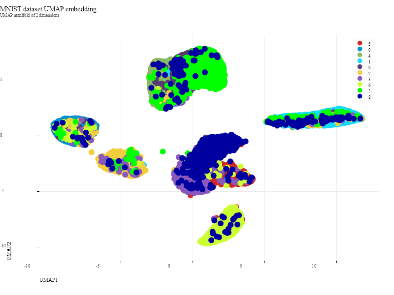

sciBASIC#
↖
sciBASIC#
↖
03 Tutorial — UMAP manifold
Project 60,000 handwritten digits onto a 2-D UMAP manifold, colored by label.
The MNIST training split — 60,000 grayscale 28 × 28 digits — is read straight from the original idx3/idx1 binary files, wrapped as ClusterEntity rows and pushed through the sciBASIC# UMAP implementation: 2 target dimensions, 128 nearest neighbors. After InitializeFit reports the epoch schedule, a single Step(n_epochs) optimizes the embedding, and the resulting manifold is rendered as a Nature-themed scatter in which every point carries its digit label as color.
02 Pipeline
From idx binaries to a labeled manifold
Load
MNIST reads train-images-idx3-ubyte + train-labels-idx1-ubyte;
ExtractDataSet(Of ClusterEntity) yields labeled 784-D feature rows.
Configure
new umap(dimensions:=2, numberOfNeighbors:=128) builds the fuzzy simplicial set over the
784-dimensional space.
Fit
InitializeFit(dataset) constructs the graph and returns the epoch schedule
n_epochs.
Embed
umap.Step(n_epochs) optimizes the low-dimensional layout;
GetEmbedding() returns one 2-D coordinate per image.
Plot
A ScatterPlot (800 × 600, PlotTheme.Nature) draws UMAP1 vs UMAP2 with
each point colored by its digit label.
01 The Script
Full demo source
The complete script exactly as executed by the sciBASIC# script engine (vbs.exe) — nothing elided.
#include "Microsoft.VisualBasic.DataMining.UMAP.dll"
#include "Microsoft.VisualBasic.MachineLearning.DataStorage.dll"
#include "Microsoft.VisualBasic.DataMining.Framework.dll"
#include "Microsoft.VisualBasic.Drawing.dll"
#include "Microsoft.VisualBasic.Data.DataPlot.dll"
#include "Microsoft.VisualBasic.Math.Randomizer.dll"
imports Microsoft.VisualBasic.MachineLearning.DataStorage
imports Microsoft.VisualBasic.DataMining.ComponentModel.EntityModels
imports Microsoft.VisualBasic.DataMining.UMAP
imports Microsoft.VisualBasic.DataMining
imports Microsoft.VisualBasic.Scripting.Runtime
imports microsoft.visualbasic.data.plots
imports microsoft.visualbasic.drawing
dim mnist as new MNIST(
"G:\GCModeller\src\R-sharp\test\demo\machineLearning\umap\mnist_dataset\train-images-idx3-ubyte",
"G:\GCModeller\src\R-sharp\test\demo\machineLearning\umap\mnist_dataset\train-labels-idx1-ubyte")
dim dataset = mnist.ExtractDataSet(of ClusterEntity)().toarray()
dim umap as new umap(dimensions := 2,numberOfNeighbors := 128 )
dim n_epochs As Integer = umap.InitializeFit(dataset)
dim number = dataset.ClassId().ascharacter().toarray()
Call umap.Step(n_epochs)
dim manifold = umap.GetEmbedding()
dim x = from v as double() in manifold select v(0)
dim y = from v as double() in manifold select v(1)
call SkiaDriver.Register()
Using plt As New ScatterPlot(800, 600, PlotTheme.Nature())
plt.Title = "MNIST dataset UMAP embedding"
plt.SubTitle = "UMAP manifold of 2 dimensions"
plt.XLabel = "UMAP1"
plt.YLabel = "UMAP2"
plt.Plot(DataSerials(x:=x.toarray(),y:=y.toarray(), number).tolist())
plt.SavePng("Z:/mnist-umap.png", 300)
End Using
03 Results
The 2-D manifold

{kind=link}